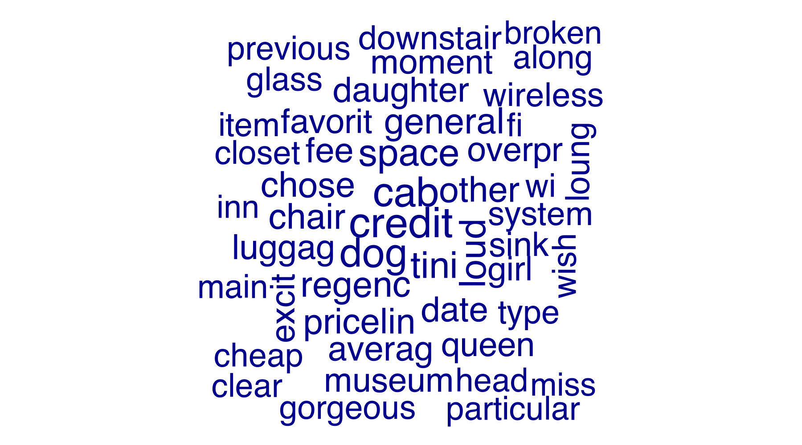
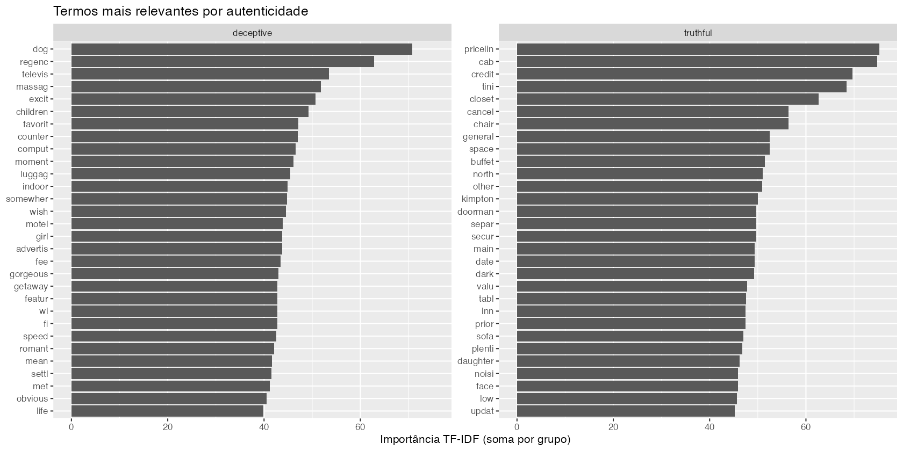
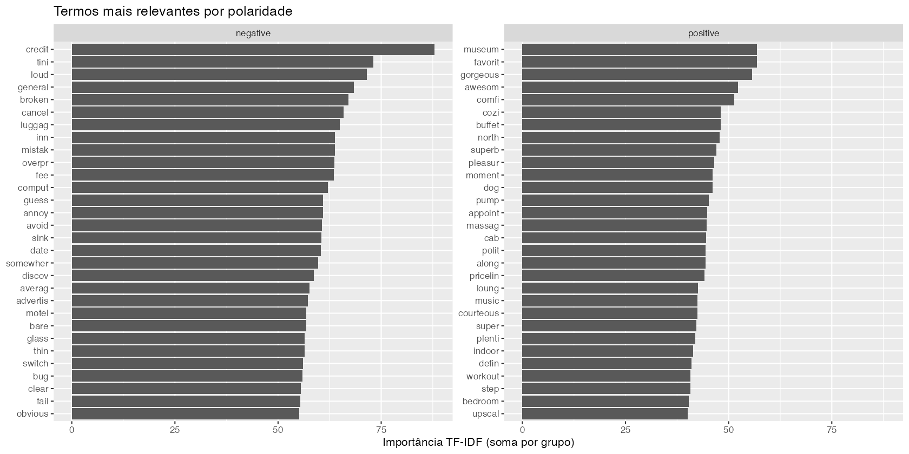
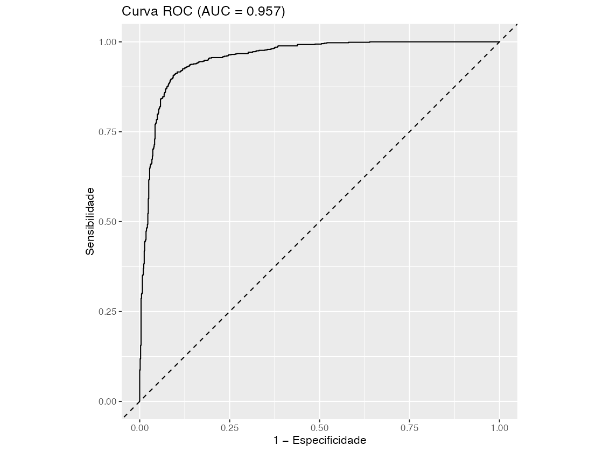
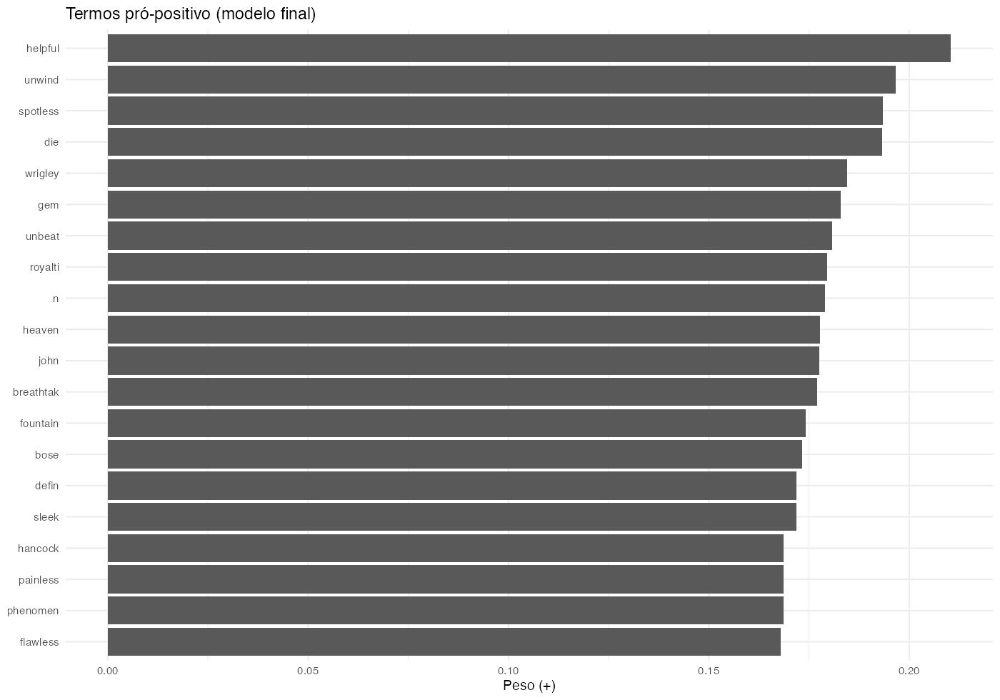
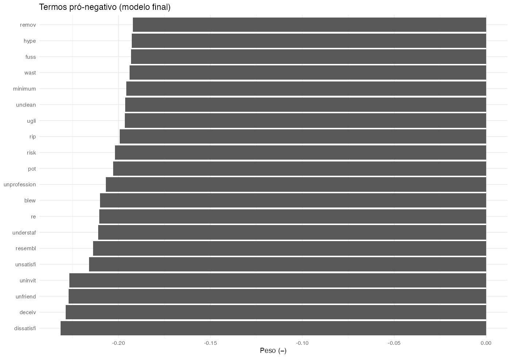
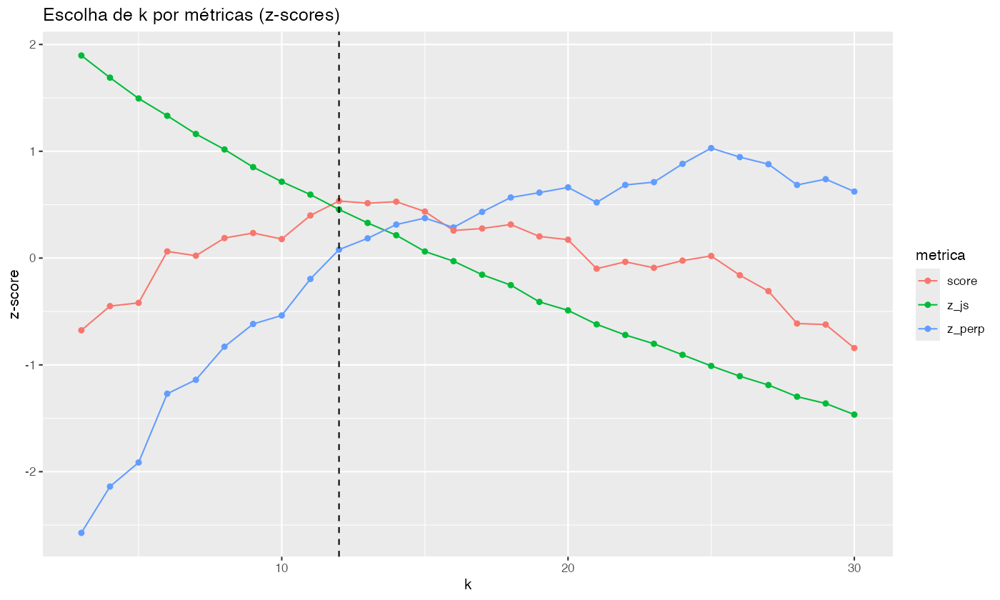
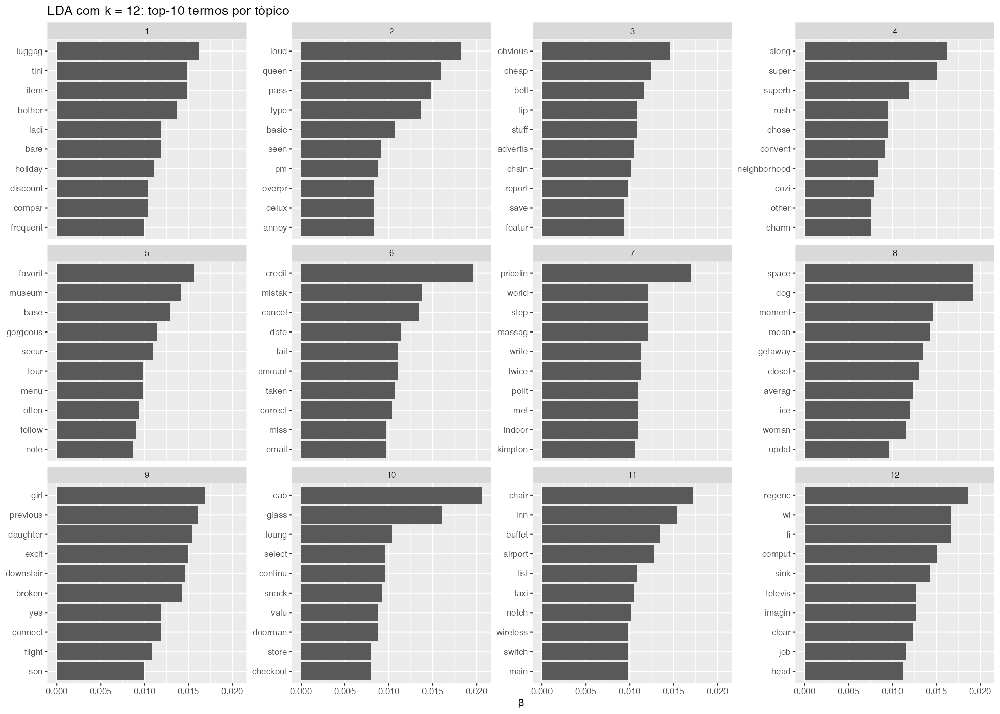
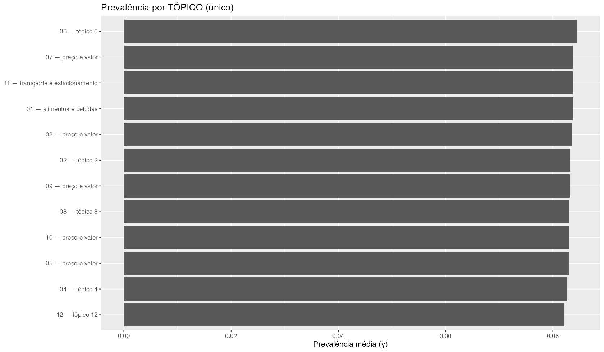
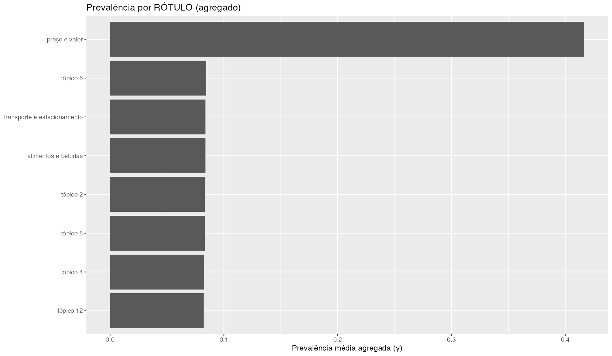

Objetivos: (i) identificar tópicos que explicam positividade/negatividade; (ii) encontrar sinais linguísticos que diferenciem avaliações verdadeiras de falsas; (iii) traduzir tudo em ações de marketing e moderação. Todas as decisões são data‑driven.
| deceptive | polarity | n |
|---|---|---|
| truthful | positive | 400 |
| deceptive | negative | 400 |
| deceptive | positive | 400 |
| truthful | negative | 396 |
Leitura: a distribuição serve como 'baseline' de acurácia de um classificador ingênuo (sempre escolher a classe majoritária). Neste conjunto, a baseline de acurácia (maioria) é de 50.1%; qualquer modelo deve superar (teoricamente) um resultado similar a uma coin toss
| documentos | chars_mediana | chars_p95 | palavras_mediana | palavras_p95 |
|---|---|---|---|---|
| 1596 | 700 | 1690 | 128 | 312 |
Leitura: mediana e P95 de caracteres/palavras indicam cauda longa (textos extensos), justificando TF‑IDF e regularização na modelagem para mitigar termos oportunistas.
| etapa | n_docs | n_termos |
|---|---|---|
| DFM inicial | 1596 | 6477 |
| Após remover certos termos (hotel/source) | 1596 | 6477 |
| Após corte usando hapax + ubiquidade | 1596 | 3102 |
Racional: remoção de termos evita vazamento de rótulo; trimming corta ruído. Reduzimos o vocabulário em 52.1% aparentemente s/ perder mta cobertura
Nuvem de palavras (após limpeza):

Leitura: a nuvem é útil para inspeção rápida, mas pode destacar termos frequentes pouco úteis. Por isso validamos relevância com TF‑IDF/Keyness.
| rank | feature | frequency | docfreq |
|---|---|---|---|
| 1 | credit | 57 | 35 |
| 2 | cab | 55 | 41 |
| 3 | dog | 54 | 36 |
| 4 | space | 50 | 41 |
| 5 | tini | 49 | 41 |
| 6 | loud | 48 | 41 |
| 7 | regenc | 47 | 39 |
| 7 | general | 47 | 41 |
| 9 | other | 46 | 41 |
| 9 | chose | 46 | 41 |
Nuvem refinada (remoção data‑driven de termos pouco discriminativos):
Removemos automaticamente 36 termos de alta frequência e baixa discriminação (p≥0,20 em keyness para autenticidade e para polaridade). A remoção é apenas visual; o modelo usa o corpus completo já limpo.
TF‑IDF — deceptive vs truthful:

| group | top8 |
|---|---|
| deceptive | dog, regenc, televis, massag, excit, children, favorit, counter |
| truthful | pricelin, cab, credit, tini, closet, cancel, chair, general |
Leitura: termos em ‘deceptive’ sugerem linguagem genérica/superlativa; em ‘truthful’, menções a elementos específicos do serviço/quarto. Estes indícios alimentam a priorização de moderação (triagem).
TF‑IDF — positive vs negative:

| group | top8 |
|---|---|
| negative | credit, tini, loud, general, broken, cancel, luggag, inn |
| positive | favorit, museum, gorgeous, awesom, comfi, buffet, cozi, north |
Leitura: positivos destacam conforto/atendimento/valor; negativos tratam de ruído, limpeza, cobranças e atritos de processo. Esse mapa direciona prioridades de operação e comunicação.
Falsos positivos (FP):
Falsos negativos (FN):
| .metric | .estimator | .estimate |
|---|---|---|
| accuracy | binary | 0.9066 |
| precision | binary | 0.9074 |
| recall | binary | 0.9062 |
| f_meas | binary | 0.9068 |
| kap | binary | 0.8133 |
| roc_auc | binary | 0.9568 |
| Prediction | Truth | Freq |
|---|---|---|
| negative | negative | 722 |
| positive | negative | 74 |
| negative | positive | 75 |
| positive | positive | 725 |
| metric | value |
|---|---|
| TPR (sensibilidade)+ | 0.9062 |
| TNR (especificidade) | 0.9070 |
| FPR | 0.0930 |
| FNR | 0.0938 |
| Balanced Accuracy | 0.9066 |
| Baseline Accuracy (majoritária) | 0.5013 |
Curva ROC:

Interpretação data‑driven do modelo: o AUC supera substancialmente a baseline (50.1%). O limiar τ foi escolhido pelo índice de Youden (max s+e), equilibrando falsos positivos e falsos negativos. O parâmetro elástico α (mediana dos folds) para o ajuste final foi 0.
Importância de termos (interpretação do modelo):


Leitura: pesos positivos aumentam a chance de ‘positive’; negativos elevam ‘negative’. Direcionamento: reforçar termos positivos nas campanhas e tratar operacionalmente os termos negativos recorrentes.
| k | perplexity | js_div | z_perp | z_js | score |
|---|---|---|---|---|---|
| 3 | 2321.193 | 0.5310 | -2.5726 | 1.8965 | -0.6761 |
| 4 | 2290.544 | 0.5214 | -2.1389 | 1.6893 | -0.4496 |
| 5 | 2274.628 | 0.5123 | -1.9137 | 1.4944 | -0.4193 |
| 6 | 2229.126 | 0.5048 | -1.2698 | 1.3324 | 0.0626 |
| 7 | 2219.932 | 0.4969 | -1.1397 | 1.1619 | 0.0222 |
| 8 | 2198.004 | 0.4902 | -0.8294 | 1.0170 | 0.1876 |
| 9 | 2182.987 | 0.4825 | -0.6169 | 0.8517 | 0.2348 |
| 10 | 2177.344 | 0.4761 | -0.5371 | 0.7151 | 0.1781 |
| 11 | 2153.199 | 0.4705 | -0.1954 | 0.5945 | 0.3991 |
| 12 | 2133.798 | 0.4641 | 0.0792 | 0.4552 | 0.5344 |
| 13 | 2126.319 | 0.4582 | 0.1850 | 0.3292 | 0.5142 |
| 14 | 2117.218 | 0.4529 | 0.3138 | 0.2142 | 0.5280 |
| 15 | 2112.944 | 0.4458 | 0.3742 | 0.0617 | 0.4359 |
| 16 | 2119.119 | 0.4416 | 0.2869 | -0.0288 | 0.2581 |
| 17 | 2108.822 | 0.4357 | 0.4326 | -0.1556 | 0.2770 |
| 18 | 2099.289 | 0.4312 | 0.5675 | -0.2530 | 0.3144 |
| 19 | 2096.085 | 0.4239 | 0.6128 | -0.4101 | 0.2027 |
| 20 | 2092.617 | 0.4202 | 0.6619 | -0.4896 | 0.1723 |
| 21 | 2102.568 | 0.4141 | 0.5211 | -0.6203 | -0.0993 |
| 22 | 2091.005 | 0.4095 | 0.6847 | -0.7197 | -0.0350 |
| 23 | 2089.142 | 0.4057 | 0.7111 | -0.8022 | -0.0911 |
| 24 | 2077.044 | 0.4009 | 0.8823 | -0.9057 | -0.0234 |
| 25 | 2066.634 | 0.3960 | 1.0296 | -1.0096 | 0.0199 |
| 26 | 2072.575 | 0.3916 | 0.9455 | -1.1059 | -0.1604 |
| 27 | 2077.266 | 0.3877 | 0.8791 | -1.1886 | -0.3095 |
| 28 | 2091.005 | 0.3827 | 0.6847 | -1.2973 | -0.6126 |
| 29 | 2087.183 | 0.3797 | 0.7388 | -1.3612 | -0.6224 |
| 30 | 2095.371 | 0.3749 | 0.6229 | -1.4652 | -0.8423 |
Decisão: escolhemos k que maximiza o score z(−perplexidade) + z(JS). Ponto ótimo encontrado: k* = 12, onde há bom trade-off entre ajuste e separação entre tópicos.
Seleção de k (LDA):

Top termos por tópico:

| topic | topic_label | top_10 |
|---|---|---|
| 1 | alimentos e bebidas | luggag, tini, item, bother, bare, ladi, holiday, compar, discount, frequent |
| 2 | tópico 2 | loud, queen, pass, type, basic, seen, pm, delux, overpr, annoy |
| 3 | preço e valor | obvious, cheap, bell, stuff, tip, advertis, chain, report, featur, save |
| 4 | tópico 4 | along, super, superb, chose, rush, convent, neighborhood, cozi, other, charm |
| 5 | preço e valor | favorit, museum, base, gorgeous, secur, tour, menu, often, follow, note |
| 6 | tópico 6 | credit, mistak, cancel, date, amount, fail, taken, correct, miss, email |
| 7 | preço e valor | pricelin, world, step, massag, twice, write, indoor, polit, met, kimpton |
| 8 | tópico 8 | space, dog, moment, mean, getaway, closet, averag, ice, woman, updat |
| 9 | preço e valor | girl, previous, daughter, excit, downstair, broken, yes, connect, flight, son |
| 10 | preço e valor | cab, glass, loung, select, continu, snack, doorman, valu, store, checkout |
| 11 | transporte e estacionamento | chair, inn, buffet, airport, list, taxi, notch, wireless, main, switch |
| 12 | tópico 12 | regenc, wi, fi, comput, sink, imagin, televis, clear, job, head |
Prevalência por tópico:

Prevalência por rótulo (agregado):

| topic_label | docs | perc |
|---|---|---|
| preço e valor | 628 | 39.5 |
| alimentos e bebidas | 214 | 13.5 |
| tópico 2 | 186 | 11.7 |
| tópico 4 | 146 | 9.2 |
| tópico 6 | 132 | 8.3 |
| tópico 8 | 108 | 6.8 |
| transporte e estacionamento | 98 | 6.2 |
| tópico 12 | 77 | 4.8 |
Leitura: os tópicos com maior γ médio e maior dominância merecem mais atenção.Ex.: se 'preço e valor' domina, propostas de valor e transparência de taxas devem liderar o plano de ação.
Principais drivers positivos:
Principais drivers negativos:
Ações rápidas: (i) transformar drivers positivos em planos de ação; (ii) endereçar drivers negativos com SLAs (ex.: ruído/limpeza) e revisão de políticas internas(ex.: taxas/cobranças).
Falsas (deceptive) — termos característicos:
Verdadeiras (truthful) — termos característicos:
Recomendação de moderação: usar esses termos como features de triagem (priorização) e manter revisão humana como decisão final.
| topic | topic_label | ação | top_10 |
|---|---|---|---|
| 1 | alimentos e bebidas | Padronizar tempos; reforço de equipe em picos; menu enxuto | luggag, tini, item, bother, bare, ladi, holiday, compar, discount, frequent |
| 2 | tópico 2 | Monitorar e criar playbooks específicos para o tópico | loud, queen, pass, type, basic, seen, pm, delux, overpr, annoy |
| 3 | preço e valor | Ofertas com valor agregado e transparência de taxas; revisar políticas percebidas como ocultas | obvious, cheap, bell, stuff, tip, advertis, chain, report, featur, save |
| 4 | tópico 4 | Monitorar e criar playbooks específicos para o tópico | along, super, superb, chose, rush, convent, neighborhood, cozi, other, charm |
| 5 | preço e valor | Ofertas com valor agregado e transparência de taxas; revisar políticas percebidas como ocultas | favorit, museum, base, gorgeous, secur, tour, menu, often, follow, note |
| 6 | tópico 6 | Monitorar e criar playbooks específicos para o tópico | credit, mistak, cancel, date, amount, fail, taken, correct, miss, email |
| 7 | preço e valor | Ofertas com valor agregado e transparência de taxas; revisar políticas percebidas como ocultas | pricelin, world, step, massag, twice, write, indoor, polit, met, kimpton |
| 8 | tópico 8 | Monitorar e criar playbooks específicos para o tópico | space, dog, moment, mean, getaway, closet, averag, ice, woman, updat |
| 9 | preço e valor | Ofertas com valor agregado e transparência de taxas; revisar políticas percebidas como ocultas | girl, previous, daughter, excit, downstair, broken, yes, connect, flight, son |
| 10 | preço e valor | Ofertas com valor agregado e transparência de taxas; revisar políticas percebidas como ocultas | cab, glass, loung, select, continu, snack, doorman, valu, store, checkout |
| 11 | transporte e estacionamento | Parcerias com estacionamentos; comunicação clara de tarifas; alternativas de transporte | chair, inn, buffet, airport, list, taxi, notch, wireless, main, switch |
| 12 | tópico 12 | Monitorar e criar playbooks específicos para o tópico | regenc, wi, fi, comput, sink, imagin, televis, clear, job, head |
Priorizar os 2‑3 tópicos mais prevalentes e com maior impacto nos drivers negativos para ciclos de melhoria de 60‑90 dias. KPIs sugeridos: NPS pós‑estadia, incidência de termos negativos/100 reviews e tempo de resposta em canais digitais.